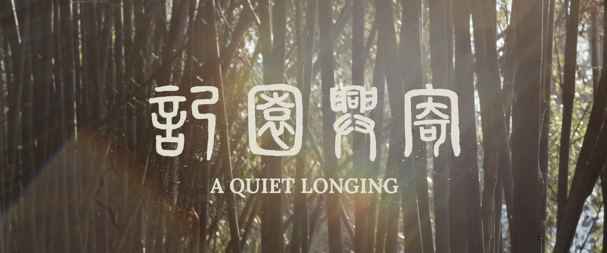
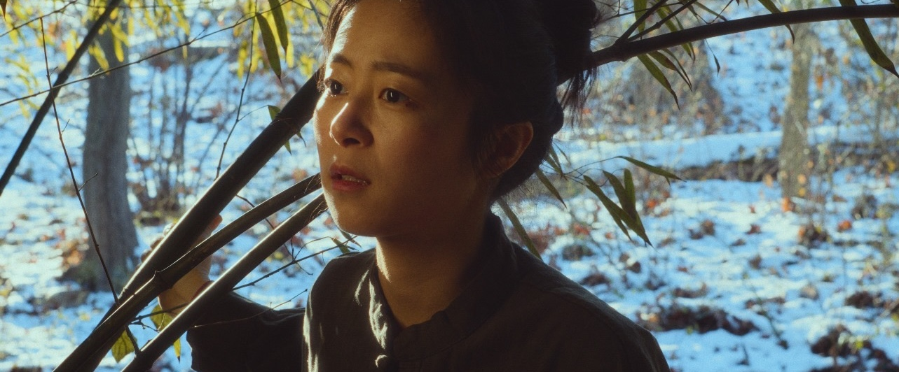
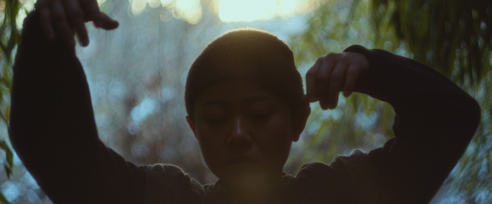
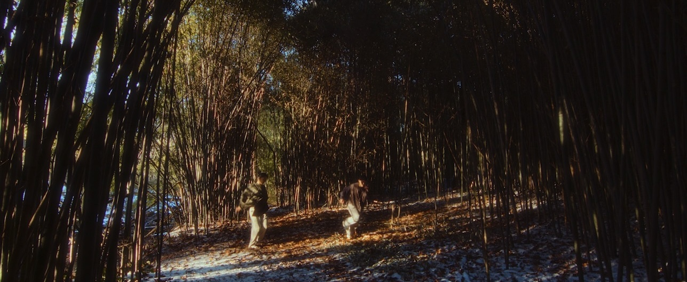
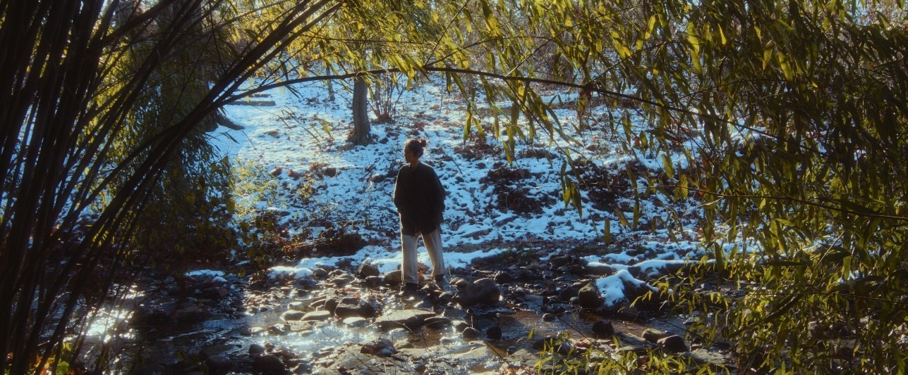
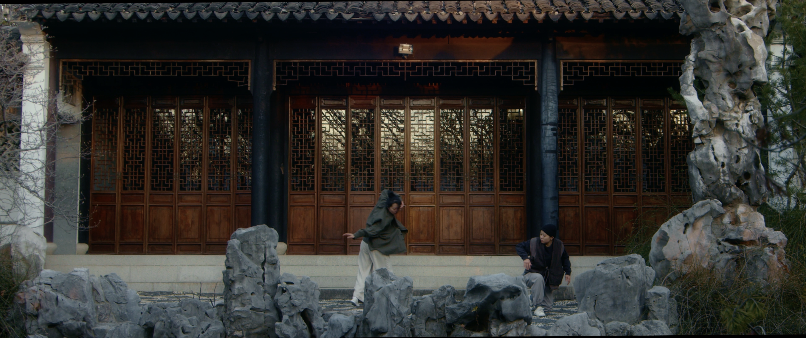

- Director
- Yiran Shu, Pearlyn Ho
- Choreographer / Dancer
- Yiran Shu, Wan-Rong Tseng
- Cinematographer
- Yu Jiang
- Music
- Zhiqi Su, Chenxi Pan, Xinliao Ling, Haoran Shi
- Colourist
- Kexuan Zhang
- BTS Videographer
- Brandon Giddens-Morris
- Title Calligrapher
- Zhou Li
Los Angeles Short Film Award; Los Angeles Movie & Music Video Awards
London Directors’ Talents
Garden State Film Festival; New York Shorts International Film Festival; Grand Rapids Film Festival